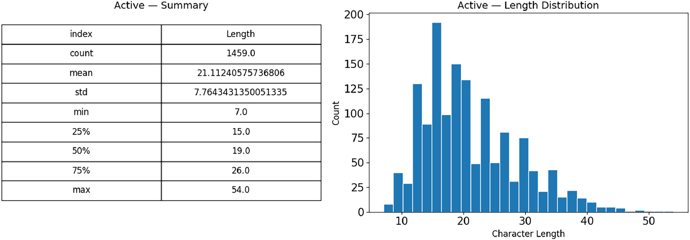

Data in Brief · Elsevier 2026BanglaVoice: A Curated Sentence-Level Annotated Dataset for Active, Passive, and Middle Voice in Bangla with Baseline Classification Benchmarks
BanglaVoice is a curated, sentence-level annotated corpus of 4,397 unique Bangla sentences spanning three grammatical voice categories (Active, Passive, and Middle), designed to advance Bangla NLP research. Data was sourced from major public portals (Prothom Alo, Kishor Alo, Sachalayatan, Kobitaclub) spanning 2023 to 2025. An independent 3-annotator labeling process with majority-voting achieved an exceptional inter-annotator agreement of Fleiss' kappa = 0.955. Character-level TF-IDF features (3 to 5 gram) fed into baseline classifiers, with LinearSVC achieving a top F1-score of 93.1% and AUC of 0.989, demonstrating near-human classification performance.
Labony Sur's Contributions
Data Curation
Annotation
Validation
Writing - Review & Editing
4,397
Total Sentences
k = 0.955
Fleiss' Kappa
93.1%
Best F1-Score
3,234
Unique Tokens
0.989
AUC (micro-avg)
Open
Access Dataset
Dataset Class Distribution
Baseline Model Benchmark Results
| Model | Accuracy | Precision | Recall | F1-Score | AUC |
|---|---|---|---|---|---|
| LinearSVC (Top) | 93.18% | 93.11% | 93.14% | 93.10% | 0.989 |
| Ridge Classifier | 92.84% | 92.76% | 92.78% | 92.75% | N/A |
| SGD (log loss) | 91.70% | N/A | N/A | 91.55% | N/A |
| Logistic Regression | 91.48% | N/A | N/A | 91.30% | N/A |
| Complement Naive Bayes | 86.70% | N/A | N/A | 86.13% | N/A |
| Multinomial Naive Bayes | 86.36% | N/A | N/A | 85.91% | N/A |
@article{banglavoice2026, title = {BanglaVoice: A Curated Sentence-Level Annotated Dataset for Active, Passive, and Middle Voice in Bangla with Baseline Classification Benchmarks}, author = {Alam, Md. Jahidul and Koli, Zannatul Mawa and Sur, Labony and Zarin, Zahara Al and Hena, Most. Hasna and Rabeya, Tapasy}, journal = {Data in Brief}, year = {2026}, publisher = {Elsevier}, url = {https://www.sciencedirect.com/science/article/pii/S2352340926006268}, note = {Dataset: Mendeley Data, DOI: 10.17632/ts6547j6sc.2} }